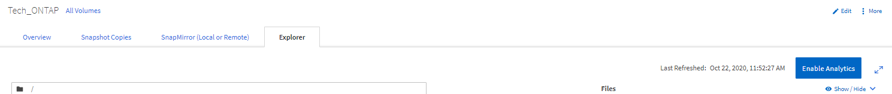
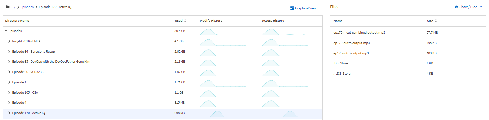
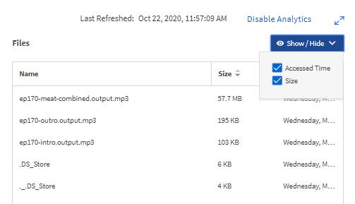
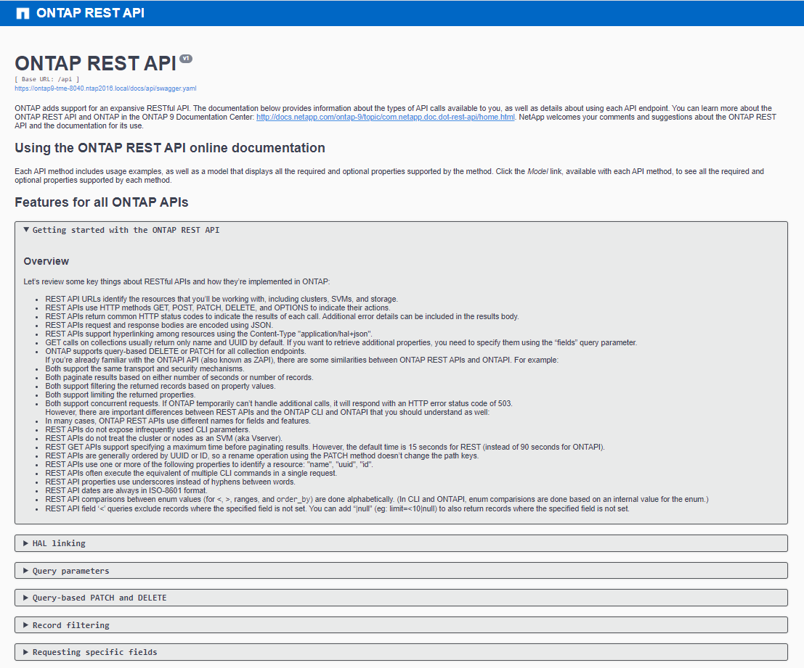

NetApp ONTAP 產品特色概述
NetApp ONTAP 產品特色概述
簡易性增強功能
 建議變更
建議變更
本節涵ONTAP 蓋提升簡易性的功能性更新功能。這包括下列項目：
-
系統管理程式更新ONTAP
-
更新及技術更新的改善ONTAP
-
REST API增強功能
System Manager增強功能
更新System Manager GUI的過程中、推出了更新版、旨在簡化管理員管理諸如儲存資源配置和日常作業等基本作業的方式。ONTAP ONTAP新的GUI也會運用ONTAP REST API、這些API已加入到32個應用程式中。在NetApp 9.8中ONTAP 、System Manager經典檢視畫面已移除。
介面之間的主要差異之一是儀表板、這是您第一次登入NetApp ONTAP ®時第一頁進入的頁面。
下列圖表顯示傳統版與新版System Manager儀表板的並排比較。

當我們仔細觀察時、可以看到幾個重大差異。
健全狀況/警示
首次登入Classic System Manager時、左上角會列出叢集和節點故障清單。這些內容摘要為可點選的連結。當您按一下其中一個連結時、系統管理員會將您重新導向至另一個頁面。
您也有一個獨立區域、顯示叢集HA狀態、以查看節點是否已容錯移轉。在下列影像中、我們會看到儀表板檢視、以及當我們按一下其中一個連結時所看到的內容、在這種情況下、我們的磁碟故障。

若要查看其他警示、您必須瀏覽回儀表板、這需要時間和額外的點選動作。新系統管理程式檢視的其中一個目標、是簡化此程序。
下圖顯示新的System Manager儀表板。健全狀況和警示檢視的兩大主要差異在於、我們現在在同一個視窗中有節點HA狀態和警示、而不是從主儀表板按一下、警示現在會出現在下拉式方塊中。

容量檢視
容量檢視也會減少額外的點擊次數。在經典ONTAP 的《餐廳資料系統管理程式》中、容量和儲存效率比率可在「叢集總覽」下找到、並有可按一下的索引標籤可供您瀏覽以尋找資訊。全新的System Manager檢視將儲存效率比率和容量檢視整合至單一圖形。

|
新的UI會利用邏輯已用空間和實體可用空間。 |

資料保護檢視已移至「Protection（保護）」下自己的儀表板。本頁提供更深入、更精細的叢集資料保護功能、並提供一個位置來運用全新的SnapMirror營運持續性（SM-BC）。

網路視覺化
此外、支援新的網路視覺化檢視（顯示叢集的網路拓撲）、以及連接埠當機時顯示紅色X的「應用程式與物件」檢視（英文）、即可移除此「應用程式與物件」檢視。ONTAP

效能檢視
System Manager中的效能資料圖表現在可保留叢集資料達1年、而非只有在您登入時才提供傳統的System Manager效能資料。在《系統管理程式》9.8中ONTAP 、您現在可以按一下小時、日、週、月或年。也有方法可將效能資料下載至CSV。

檔案系統分析
在高檔案數環境中、若要尋找資料夾容量、資料存留時間及檔案計數等資訊、通常需要透過NAS傳輸協定（例如「ls」、「du」、「Find」和「sat」）執行序列作業的時間密集命令或指令碼。
支援低衝擊的掃描儀、管理員可透過此功能、快速輕鬆地在任何NAS儲存磁碟區中找出檔案系統資訊。ONTAP這款掃描器會在ONTAP 背景中以低優先順序工作來抓取這個功能、並在您瀏覽至System Manager 9.8或更新版本的磁碟區時、立即提供豐富的資訊。
啟用檔案系統分析、只要瀏覽至您要掃描的Volume即可輕鬆完成。移至「Storage（儲存設備）」>「Volumes（磁碟區）」、然後使用搜尋功能來尋找所需的磁碟區。按一下磁碟區、然後按一下「檔案總管」索引標籤。
您可在此頁面右側看到「啟用分析」連結。

按一下「啟用」後、掃描器就會啟動。完成時間取決於磁碟區中的物件數量、以及系統負載。完成之後、您會看到系統管理員檢視中已填入整個目錄結構。此檢視可向下導覽目錄樹狀結構、並提供歷程記錄資訊、目錄大小資訊及檔案大小的存取權限。
下圖顯示了我的叢集中Tech_ONTAP磁碟區的檢視、我將此磁碟區做為歸檔 "NetApp Tech OnTap 技術播客集"。

當您按一下資料夾時、檔案清單會出現在頁面右側。

如果您選擇、您可以啟用「顯示存取時間」來查看上次存取檔案的時間。

在頁面底部、您可以看到一年內未存取多少資料、以及該資料夾中的目錄和檔案數。

除了能快速找到檔案大小和目錄資訊之外、此功能也提供資訊、協助您決定NetApp FabricPool 的支援技術是否能有效減少佔用集合體空間的冷資料量。
作用中NFS用戶端
藉助於NetApp的解決方案，可以瞭解哪些NFS用戶端正在存取叢集中的特定磁碟區，以及哪些資料LIF IP位址正在使用「NFS Connected用戶端」命令。ONTAP本命令在中有詳細說明 "TR-4067：NetApp ONTAP 《Sure NFS最佳實務做法與實作指南》"。此命令適用於需要瞭解哪些用戶端連接至儲存系統的情況、例如升級、技術更新或簡單報告。
透過GUI、可以看到這些用戶端、也可以將清單匯出為.csv檔案。ONTAP瀏覽至主機> NFS用戶端、您會看到過去48小時內處於作用中狀態的NFS用戶端清單。

其他System Manager 9.8增強功能
此外、也為System Manager帶來下列增強功能：ONTAP
|
|
下圖顯示MetroCluster 了「僅需按一下即可更新韌體」的功能。

REST API增強功能
REST API支援加入ONTAP 了支援功能、可讓儲存管理員在ONTAP 自動化指令碼中運用業界標準API呼叫功能來支援NetApp儲存設備、而不需要與CLI或GUI互動。
REST API文件與範例可透過System Manager取得。只要從網頁瀏覽器瀏覽至叢集管理介面、然後將「ocs/API」新增至位址（使用HTTPS）即可。
例如：
本頁提供可用REST API的互動式詞彙表、以及產生自己REST API查詢的方法。

在更新版本的過程中、REST API現在會註明其新增的版本、當您嘗試讓指令碼在多個版本的支援中運作時、這有助於簡化生活。ONTAP ONTAP

下表提供ONTAP 更新的REST API清單、請參閱《Rest 9.8》。
叢集韌體歷程記錄*叢集授權–容量資源池*叢集授權–授權管理員*節點度量*軟體映像上傳 MetroCluster 鏡像*媒體資料管理員*診斷*管理/建立* DR群組*互連*節點*作業*網路乙太網路連接埠度量*交換器連接埠資訊*交換器 資訊* FC介面度量* BGP對等群組* IP介面度量* LIF服務原則* SAN* NVMe度量 |
安全性 FIPS模式啟用/停用*資料加密啟用/停用 Azure金鑰錯誤* Google GCP-KMS * IP安全* Storage 檔案複製/移動* NetApp FlexCache 還原®修補程式/修改*監控檔案* Snapshot原則*儲存效率原則*檔案與目錄管理（非同步刪除、QoS與檔案系統分析） * NAS稽核記錄重新導向 CIFS工作階段*檔案存取追蹤/安全追蹤*管理事件補救*物件存放區/ S3 * S3儲存區管理* S3群組* S3原則 |
如需ONTAP 更多有關《系統管理程式》更新的資訊、請參閱《》 "第266集：NetApp®系統管理程式9.8 Tech OnTap ONTAP"。
升級與技術更新增強功能–ONTAP 更新功能–更新版本9.8
傳統上ONTAP 、只有在一或兩個主要版本中才會進行不中斷營運的功能升級。對於不經常升級的儲存管理員而言、這是升級ONTAP 時的重大問題、也是後勤工作的惡夢。誰想要在維護時間內多次升級和重新開機？
目前支援在兩年內升級至更新版本。ONTAP ONTAP也就是說、如果您想從9.6升級至9.8、您可以直接升級、而不需要改用ONTAP 升級至32位9.7。
下表提供NetApp ONTAP 更新版本的對照表。
| 起點 | 直接升級至： |
|---|---|
部分9.6 ONTAP |
資訊技術9.7、ONTAP ONTAP 更新 |
更新ONTAP |
FAS9.8、ONTAP ONTAP FAS9.n+2 |
部分9.8 ONTAP |
支援的功能包括：ONTAP ONTAP 9.n+1 |
這項簡化的升級程序也提供簡化的升級方式。新硬體節點出貨時ONTAP 、即已安裝最新的版本。先前、如果您現有的叢集執行舊ONTAP 版的版本、您必須將現有節點升級為ONTAP 與新節點相同的版本、或是將新節點降級為舊ONTAP 版的版本。此外、更為複雜的是、如果較新的硬體無法降級、您就必須花維護時間來升級現有的叢集。
利用2年的混合版本視窗、您現在可以將執行較新版本的新節點新增至叢集、以便將磁碟區從執行9.8的節點移至更高版本的更新版本、以利控制器重新整理。ONTAP ONTAP ONTAP此外、不中斷營運的集合體重新配置升級程序可讓控制器將必須執行ONTAP 的系統升級至更新版本ONTAP 的更新版本（例如、8000系列系統）、以利更新版本的版本。
建議您限制ONTAP 在混合版本狀態下運作的時間。

此程序也延伸至叢集升級、您可在其中從叢集交換整個HA配對。有了這個2年修訂版窗口和不中斷的Volume移動、現在就能實現這個目標。ONTAP
基本步驟如下：
-
將新系統連接至現有叢集、ONTAP 並在2年內提供更新版本的功能。
-
使用不中斷的Volume Move來清空節點。
-
從叢集取消連接舊節點。